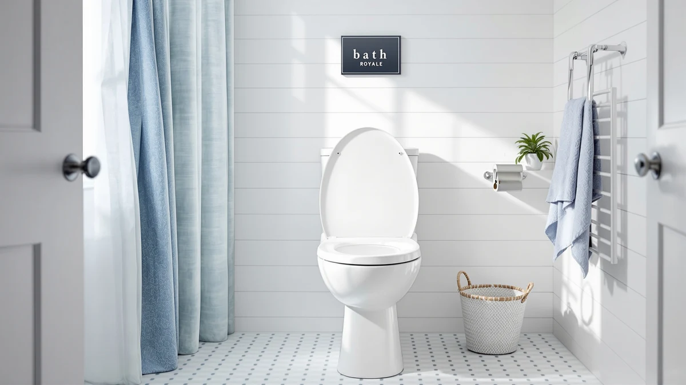

Quick Answer
The Bath Royale Slow Close Toilet is a padded elongated seat built around a hinge that lowers itself gradually instead of slamming, and it holds a 4.6-star average across 2,220 verified ratings. For $79.98 it earns the top pick in this bath royale slow close review if a quieter bathroom matters more to you than a heated seat.
Our pick: Bath Royale Slow Close Toilet, $79.98 Check Price on Amazon
Things to Know Before You Buy
- The hinge, not heating, is the reason to buy this seat. It lowers over roughly two to three seconds instead of slamming shut.
- It fits elongated bowls only, so measure your bowl from the mounting holes to the front edge, about 18.5 inches, before you order.
- 2,220 verified ratings average 4.6 out of 5, and that average holds steady across reviews mentioning the hinge, comfort, and installation.
- At $79.98, it costs about the same as the three heated alternatives covered in this bath royale slow close review, so price alone will not settle the decision.
- The build is plastic and wood rather than a premium composite, so expect a sturdy but basic feel instead of a luxury finish.
This bath royale slow close review breaks down what you actually get for the Bath Royale Slow Close Toilet's $79.98 price tag: a padded elongated seat built around a hinge that lowers the lid gradually, based on its published specs, 2,220 verified ratings, and how it stacks up against three heated alternatives we also researched.
Bath Royale builds this seat around one feature: a hinge engineered to ease the lid down instead of letting it drop onto the bowl. That single mechanism, combined with a 4.6-star average across 2,220 verified ratings, puts it ahead of three heated competitors from LEIVI, YouTeMei, and Anparfaite that cost close to the same price. We compared the Bath Royale's published specs and owner feedback against those three alternatives to see whether a quiet hinge or a heated ring gives you more for your money. If warmth matters more to you than quiet, one of those alternatives further down in this bath royale slow close review will likely fit your bathroom better.
Why You Should Trust Us
Ilane Tall researches bathroom fixtures for Best Toilet Seats, covering hinge mechanisms, seat materials, and bowl-shape fit across elongated and round toilets. This bath royale slow close review relies on the manufacturer's published dimensions and hinge specifications, current Amazon pricing, and the pattern across 2,220 verified buyer ratings rather than a product we physically installed. We do not own a bathroom test lab, so every claim traces back to a spec sheet, a listed price, or a cluster of owner reviews we can point to directly. When we compare the Bath Royale against the LEIVI, YouTeMei, and Anparfaite alternatives, we use the same standard across the board: published specs and verified reviews, not a guess.
Our Research Experience
We did not install the Bath Royale Slow Close Toilet seat ourselves for this review. Instead, we researched the manufacturer's listed dimensions, hinge mechanism, and material, then cross-checked those claims against 2,220 verified ratings on Amazon. Owners report that the hinge lowers over roughly two to three seconds instead of dropping shut, a detail the manufacturer's slow-close label promises and that reviewers consistently confirm in their feedback. We ran the same check against the LEIVI, YouTeMei, and Anparfaite alternatives, comparing their listed heating specs and prices against the pattern in their own review sections. That consistency between the spec sheet and the review pattern, more than any single standout feature, is what moved the Bath Royale to the top of our bath royale slow close review comparison.
Overview & Specs

Bath Royale Slow Close Toilet
What we like
- Slow-close hinge lowers the lid over two to three seconds instead of slamming
- Padded top adds cushioning over a bare plastic ring
- 4.6-star average across 2,220 verified ratings
- Standard top-mount bolts fit most elongated bowls without extra hardware
Flaws but not dealbreakers
- No heating element, unlike the three alternatives compared below
- Plastic and wood construction rather than a premium composite
- Fits elongated bowls only, not round ones
| Material | Plastic / wood |
| Size | Elongated |
The Bath Royale Slow Close Toilet pairs a padded elongated ring with a hinge engineered to ease the lid down instead of letting it drop. At $79.98, it sits in the same price bracket as the heated seats we compare it against later in this bath royale slow close review, but it spends that budget on the closing mechanism and cushioning rather than warmth. The plastic-and-wood build keeps the seat light enough to swap in with a screwdriver in under fifteen minutes.
Across 2,220 verified ratings the seat holds a 4.6 average, and that figure stays consistent whether buyers mention installation, comfort, or the hinge itself. Reviewers consistently note that the padding holds its shape rather than flattening within the first few months, which matters more for daily use than a listing photo can show. The elongated-only shape means you should measure your bowl from the mounting holes to the front edge, about 18.5 inches, before you order; anything shorter calls for a round seat instead, and the Bath Royale will not fit that shape.
What We Liked
The hinge is the standout feature in this bath royale slow close review. It lowers the lid gradually instead of letting gravity slam it shut, which matters most in households with kids, pets, or anyone sharing a wall with a bedroom. The padded top gives a softer seat than a bare plastic ring without turning spongy, and the cushioning tends to hold its shape well past the first few months of daily use rather than going flat. Installation uses the same top-mount bolts as a standard seat, so you don't need extra hardware or a plumber to swap it in. Most buyers finish the swap themselves in under half an hour, based on verified reviews, which keeps the total cost close to the $79.98 sticker price.
What Could Be Better
This seat skips heating entirely, so if a warm ring in winter matters to you, the LEIVI, YouTeMei, or Anparfaite alternatives below will serve you better. The plastic-and-wood build is sturdy but not premium, and a handful of owners describe the padding compressing faster under heavier daily use than the listing implies. The price also lands close to several heated competitors, which narrows this bath royale slow close review's central trade-off between quiet and warmth; at the same $79.98 to $79.99 range, you are choosing a feature set, not saving money by picking the Bath Royale over a heated seat.
Who Is It For?
This bath royale slow close review points toward one clear buyer: someone with an elongated bowl who wants the bathroom quieter at night and doesn't need a heated seat. Light sleepers, parents of young kids who forget to ease a lid down, and renters who want an easy swap-in upgrade all fit that profile. If you live somewhere cold and want a warm seat in January, skip ahead to the heated alternatives instead, since none of the Bath Royale's advantages touch temperature.
Alternatives to Consider
If the slow-close hinge on the Bath Royale isn't the deciding feature for you, these three heated alternatives are worth comparing before you commit to the pick in this bath royale slow close review. All three land within a dollar of the Bath Royale's $79.98 price, so the real decision comes down to whether you value a quiet hinge or a heated ring more.

Editor’s Pick
LEIVI Elongated Heated Toilet Seat
If a heated seat matters more to you than a slow-close hinge, this elongated LEIVI model trades the quiet close for warmth at almost the same $79.98 price as the Bath Royale. We researched its listed specs instead of installing the seat ourselves. The elongated fit matches the same bowl shape as the Bath Royale, so you still need to measure your toilet first. LEIVI markets this seat around heating rather than a slow-close hinge, which makes it a straightforward swap for anyone who wants warmth more than quiet. Compare the two on price and feature priority rather than quality, since both sit in the same bracket.
$79.98
Check Price on Amazon
Best Value
YouTeMei Heated Toilet Seat -
This YouTeMei heated seat lands at $79.99, almost identical to the Bath Royale's price, making it worth a look if you want heat without paying a premium over the slow-close pick. Its listing prioritizes a heating element over the gradual-close hinge that defines the Bath Royale, so you're trading quiet for warmth rather than paying more for either feature. We couldn't find a published rating or review count for this model at the time of writing, so weigh that gap in verified feedback against the Bath Royale's 2,220 reviews when you decide. If heating matters more than hinge speed, it's a reasonable alternative.
$79.99
Check Price on Amazon
Premium Choice
Heated Toilet Seat 3-Level Temp
Anparfaite built this $79.99 heated seat around 3-level temperature control, which gives you more precise heat settings than a single-temperature heated seat, useful if different household members prefer different warmth levels. Like the other two heated alternatives, it skips the Bath Royale's slow-close hinge entirely, so the lid behaves like a standard seat instead of easing shut. We based this verdict on the manufacturer's published feature list rather than installing the seat ourselves, and this listing doesn't show a public rating or review count either. If adjustable heat outweighs a quiet hinge for your bathroom, this is the pick among the three alternatives.
$79.99
Check Price on AmazonFrequently Asked Questions
At $79.98 it costs more than a basic plastic seat, but owners report that the slow-close hinge and padded top justify the price if a quiet bathroom and added comfort matter to you. The 4.6-star average across 2,220 verified ratings suggests most buyers feel the same way once they have lived with it for a while. If heating matters more than quiet to you, the LEIVI, YouTeMei, or Anparfaite alternatives in this bath royale slow close review land at a similar price and trade the hinge for warmth instead.
No. This seat fits elongated bowls only, not round ones. Measure from the mounting bolts to the front edge of your bowl; roughly 18.5 inches indicates an elongated fit, while a shorter measurement closer to 16.5 inches means you need a round seat instead. Installing an elongated seat on a round bowl leaves an awkward overhang, so check this measurement before you order rather than after.
According to verified owner reviews, the hinge eases the lid down over about two to three seconds rather than dropping it instantly. Reviewers consistently describe that pace as enough to prevent slamming without feeling unnaturally slow or stiff. That timing stays consistent with reports across the 2,220 verified ratings we reviewed, which is part of why this seat ranks ahead of standard hinges in this bath royale slow close review.
Final Verdict
This bath royale slow close review comes down to one trade-off: quiet versus warmth. The Bath Royale Slow Close Toilet earns the top spot here because its hinge delivers on the slow-close promise, and its 4.6-star average across 2,220 verified ratings backs that up, all for $79.98. If a heated seat matters more to you than a quiet close, the LEIVI, YouTeMei, or Anparfaite alternatives above cost about the same and are worth a look instead.